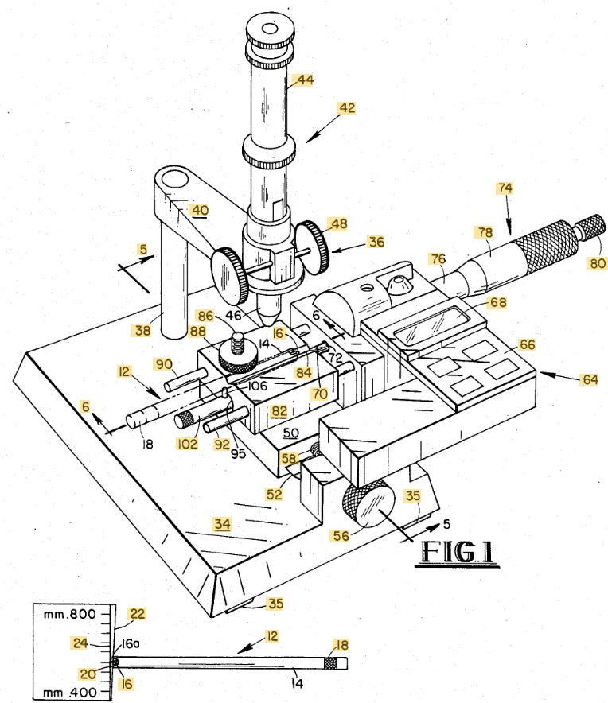
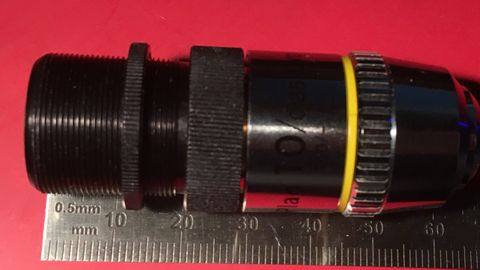
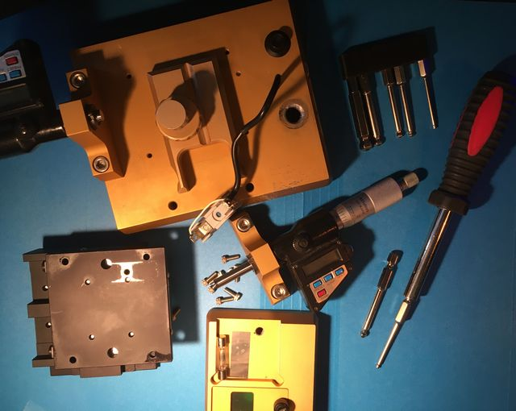
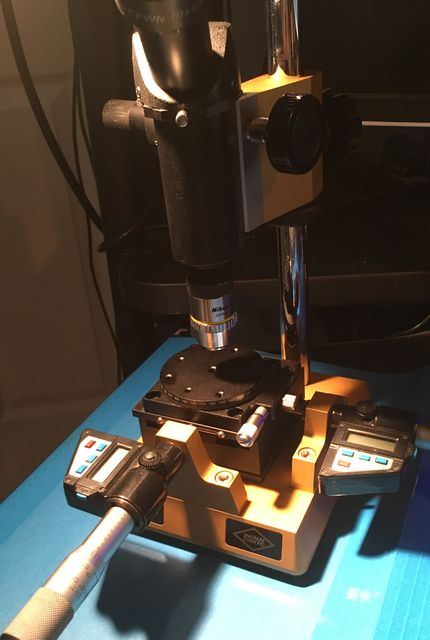
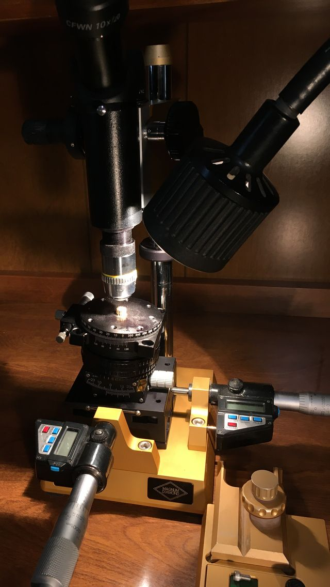

back

Chiron Magnum Diamond Micron Keratome Scope w/ Nikon E Plan 10 Objective
eBay item number: 385307596701
Item specifics
Condition: Used
Seller Notes: Unit pulled from working environment, in good condition.
Sold as is/as pictured, no additional parts/cables included.

Radial keratotomy
1 Jan 2023
X-Acto blade
The (approx 38mm o.d.) focus knobs on mine turn a little less than a full revolution, with focus travel less than 19mm.
Vertical shaft diameter is 19mm or 3/4 inch; screws are "U.S. Customary Unit" (USC) rather than metric.
Base dimensions are about 125x150mm; overall height around 350mm, massing about 5kg.
Spring-loaded XY stage beneath keratome fixture is about 75x75x37mm.
RMS objective mount has a threaded 12.8mm i.d. tube with knurled jam nut:

... allowing tube length adjustment.
XY stage mounting hole spacing is about 51 x 63mm.

No stage mounting hole works well for centering a rotating stage.

11 Jan 2023
Tilt stage arrived; using M42 helicoid for Z axis...
trying to decide whether rotate over tilt will be more generally convenient than tilt above rotate.


{kind=link}